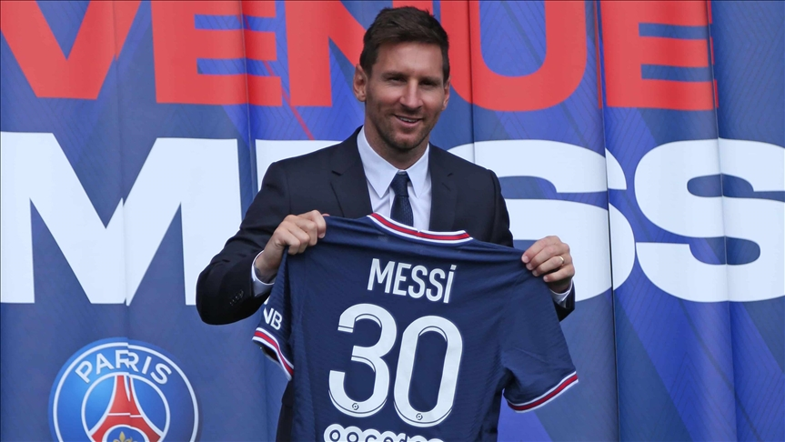

Equipos de leo Messi
FC Barcelona
Comenzó la pretemporada 2004-2005 jugando amistosos con el primer equipo: ante el Banyoles, el Figueres, el Palamós, el Hércules y el Olympique de Marsella, donde fue titular por primera vez.
Contra el Palamós el 20 de julio en el Camp Nou, en el minuto '74, anotó su primer gol.
Messi paso la mayopria de su carrera en este club, al cual lleva en su corazon, pero el 5 de agosto de 2021, el Barcelona anunció que no podía mantener a Messi, pues hacerlo implicaba sobrepasar el tope de gastos previstos por La Liga.
Messi dejó el club con treinta y cinco títulos ganados (entre ellos diez Ligas y cuatro Ligas de Campeones). En la conferencia de despedida en el Auditori 1899 del Camp Nou, afirmó:
"No sé si lo hizo el club, pero yo tengo claro que hice todo lo posible para quedarme. Estaba todo arreglado. Me bajé el sueldo un 50 %. El resto es mentira. Y, después, nadie me pidió nada más".
Paris Saint-German
Messi jugó su primer partido el 29 de ese mes, ante el Stade de Reims por la cuarta fecha de la Ligue 1. Ingresó al campo en el minuto '65, en sustitución de Neymar.
El partido acabó 0-2 a favor del equipo parisino. El 28 de septiembre, en la segunda jornada del Grupo A de la Liga de Campeones ante el Manchester City de Guardiola, que el PSG ganó 2-0, marcó su primer gol después de una pared con Mbappé.
Alcanzó así la marca de Benzema de diecisiete temporadas consecutivas anotando en esa competición.
El 19 de octubre, en el 3-2 ante el Leipzig en el tercer partido de clasificación en la Liga de Campeones, hizo su primer doblete, el segundo gol, de penal a lo Panenka, después de una falta sobre Mbappé en el área rival.
El 1 de junio del 2023, el entrenador Christophe Galtier confirmó que Messi jugaría su último partido ante el Clermont.

Paris Saint-German
Luego de que se hablara sobre una posible vuelta a Barcelona y de un fichaje con Al-Hilal, el 7 de junio Messi anunció en una entrevista con Mundo Deportivo que firmaría contrato con el Inter Miami. Una hora después, el club duplicó su cantidad de seguidores en Instagram y el precio de las entradas para el posible primer partido aumentó 500 %.
El club lo presentó el 16 de julio en el estadio DRV PNK y anunció que usaría el dorsal número 10.
Messi jugó por primera vez el 21 de julio ante Cruz Azul por la primera jornada del Grupo 3 de la Zona Sur de la Leagues Cup, ingresó en el minuto 54 por Benjamin Cremaschi y en el minuto 94 marcó de tiro libre un gol con el que su club ganó 2-1.